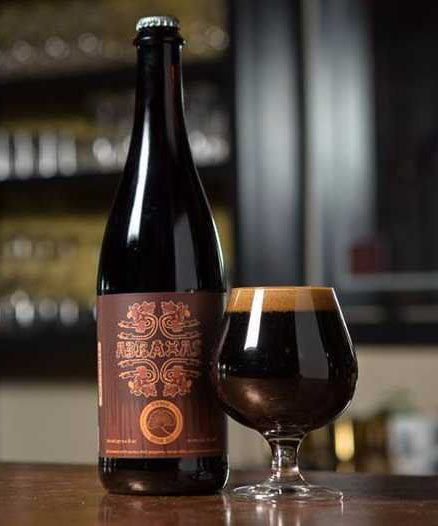

ABRAXAS IMPERIAL STOUT
HOME
STOUTS
Abraxas
Perennial Artisan Beers
An Imperial Stout brewed with ancho chili peppers, cacao nibs, vanilla beans, and cinnamon sticks. Pouring deep brown with a thick head, this beer has a complex body with a delicious lingering roastiness. Abraxas is brewed with unique ingredients intended to challenge and excite the palate. It may be enjoyed right away or allowed to age in the bottle. Vertical tastings are encouraged.
Located in St. Louis, Missouri, Perennial Artisan Beer's philosophy is to brew beer with the adventurous craft beer drinker in mind—focusing on hand-crafted, small batches of beer, using local, seasonal and organic ingredients as much as possible.
Check out their site HERE 